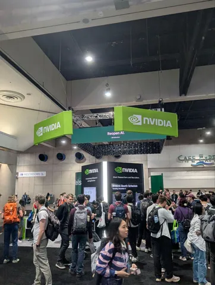
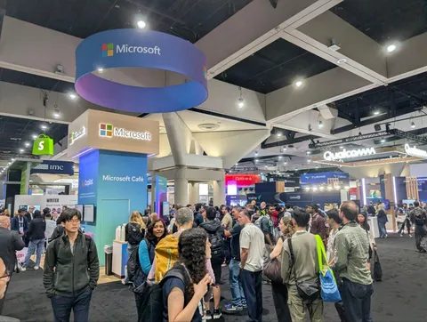
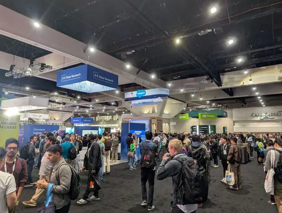
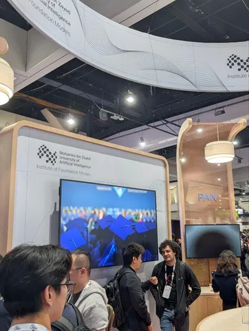
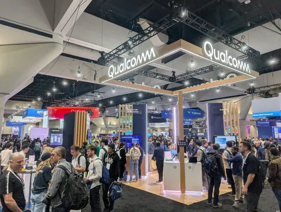
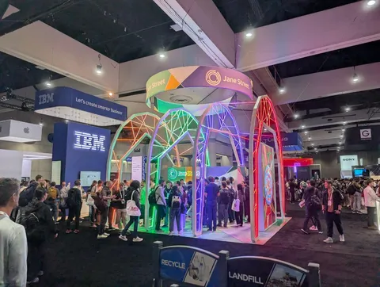
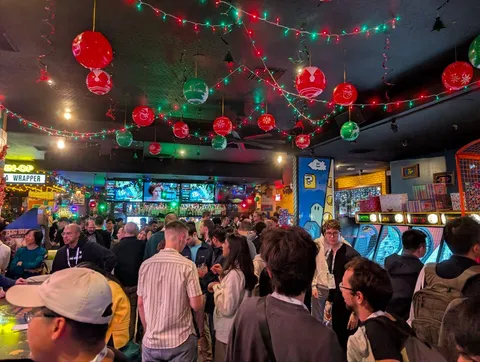
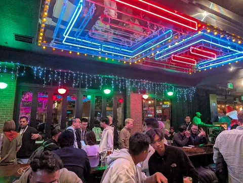

Пока все набираются сил перед новыми воркшопами и докладами, исследователь Yandex Research Роман Гарипов делится впечатлениями о том, как прошёл первый день конференции в Сан-Диего.
После очереди на регистрацию мы направились на туториал Human-AI Alignment: Foundations, Methods, Practice, and Challenges. Провёл его Yoshua Bengio, один из отцов Deep Learning.
Потом было ещё несколько интересных выступлений:🔴 про бенчмарки для reasoning, которые требуют робастности к минимальному изменению промпта,🔴 про алайнмент от людей из академии, frontier ai labs и Bengio,🔴 туториал по scaling test time compute/parallel reasoning от Beidi Chen/Zhuoming Chen из CMU и других.
На стендах компаний и университетов я успел пообщатся с профессорами из Канады, в том числе Mila (research institute). Все они охотно включались в обсуждения и делились своим взглядом на область. Ещё было много трейдеров из крупных фондов.
Закончился день на вечеринке от Together AI. Там собрались коллеги из Nvidia, Сerebras Systems, Google DeepMind, Snapchat и других известных компаний. Понетворкались, приятно удивило, что в Together AI хорошо знают Яндекс и Высшую школу экономики.
Как дела в Мексике — на второй площадке NeurIPS 2025 — читайте в канале CV Time.
#YaNeurIPS25
ML Underhood







